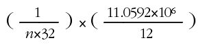

Dr. Dobb's Journal, April 2006
So I built her an ISBN bar-code scanner. Perfect gift, huh?
Even if your sweetie doesn't need one, the project serves as a good introduction to the world of small-scale programming. The mission statement seems straightforward: Read a bar-code wand, blink a few LEDs, and send a dozen ASCII characters corresponding to a valid bar code through a serial port.
Sounds easy enough, right?
Your resources include an 8-bit, sub-1-MIPS processor, 64 bytes of RAM for data, and 1 KB of Flash ROM for the program. Oh, by the way, the hardware doesn't include a serial port.
Here's a look at programming on the low end, down where one person can actually comprehend a complete project. If you've been working on enterprise-class jobs, you're in for a treat!
Figure 1 shows the entire project, tucked neatly into a 5-inch box. The chip behind the LEDs on the left, an Atmel AT89C1051 microcontroller, does all the heavy lifting. A MAX232 clone behind the 9-pin serial connector converts logic-level signals to proper serial-port voltages. The front panel, a transparent sheet of CNC-milled plastic, lacks even rudimentary labels because you just turn the thing on and start scanning.
The HP bar-code scanner wand was a surplus find that, as with many such treasures, lacks a part number. The HBCS-A000 datasheets seemed close enough, even if the connector pinout didn't match. I took a hint from Procrustes: I chopped off the impossible-to-match connector and replaced it with a 3.5-mm stereo headphone plug.
Four nickel-metal-hydride AA cells provide over a week of normal use. The microcontroller monitors the battery voltage and lights a red LED when it's recharge time. If this were a commercial project, you'd expect a power jack and a battery charger but, being a geek, I find nothing wrong with just popping the top and swapping the cells.
The schematic in Figure 2 shows the microcontroller and I/O circuitry, which are the most interesting bits of the project. I omitted the battery, MAX232, and some other odds and ends.
The Atmel AT89C1051 single-chip microcontroller descends from the Intel 8051 series, which was introduced in 1980 and remains alive and well today. Although the 8051 architecture can best be described as weird, it accurately fits the low end of the embedded-systems market and has hundreds of variants from a dozen manufacturers.
Even if you've never pondered a schematic before, you can tell there isn't much involved in the "computer" part of this project. A single-chip microcontroller means exactly that: One chip provides all the logic functions.
How much can you fit into 1024 bytes of instruction space?
The oval silver can between the 89C1051 and the batteries, labeled Q1 in the schematic, is the quartz crystal setting the CPU's clock frequency to exactly 11.0592 MHz. Why not a nice, round 12.0000 MHz?
A current high-end CPU multiplies its external clock by a large factor to produce the internal clock that controls its circuitry. For example, a 3-GHz Pentium multiplies an external 200-MHz clock by 15 to get a 333 ps instruction time. Not coincidentally, it also confines the microwave frequencies to a single chip where distributing them is merely very difficult.
In contrast, the 8051 divides the external clock by a factor of 12. A single-cycle instruction thus executes in 1.08507 ms, a cool factor of 3255 slower than the Pentium. The original architecture dates back to the era when decoding simple instructions required a multistage pipeline with access to glacially slow memories. Even though contemporary variants have single-clock-cycle execution, there's still a demand for backward compatibility.
The original 8051 included a hardware serial port, with the bit rate equal to fractions of 1/32 of the instruction rate:
A 9600 baud port sends a bit every 104.167 ms, which makes n=3. Any other crystal frequency wouldn't divide down to the proper serial port rate, so the serial I/O bit rate determines the clock crystal frequency. As we'll see, sending serial bits in software still requires that odd crystal.
You can get 11.0592-MHz crystals from nearly any crystal supplier, which should tell you something about the 8051 architecture's market share.
Instruction-processing times on high-end microprocessors depend on so many factors that you can no longer even estimate the time required to execute a given chunk of code. In pleasant contrast to all that, Listing One is a simple 1-msec delay routine consisting of a few loop instructions.
The 8051 has 255 unique instructions, each of which executes in either one or two instruction cycles: 1.08 or 2.16 microseconds. You can write a routine, tally the instruction cycle times, and know exactly how long the CPU will spend working on it!
Large-system application programs deal with I/O in terms of high-level API functions, where packets and streams of tidy data magically funnel in and out of system memory. The notion of a user program directly controlling an I/O port pretty much died with Windows 98, as did any link between program execution and real-time I/O.
Microcontroller programs have an intimate relationship with the external world, because such things as intelligent peripheral controllers don't exist. Indeed, microcontrollers tend to be those controllers: Processing raw data and passing it up the line to more complex programs that prefer not to handle the details. That's exactly what my bar-code scanner does by converting raw timing data from the HP wand into ASCII characters.
The top trace of the oscilloscope image in Figure 3 shows the wand's output for a typical bar code. The voltage is high (about 5 volts) when the wand sees a black bar. Although the bars are nominally multiples of a unit width, the pulse width for each bar depends on both the actual printed width and how fast the wand moves across the book cover.
Listing Two shows what happens at each edge. Oddly, the 8051 lacks a one-bit exclusive-OR instruction, so detecting and acting on an input change requires four instructions.
The 16-bit hardware timer counts instruction cycles when control bit TR0 is turned on by a SETB instruction. Because 8051 has an 8-bit datapath, you must read and process the high (TH0) and low (TL0) bytes in two distinct operations. Rookies often forget that reading the whole timer isn't an atomic operation, an error that causes bizarre intermittent failures.
The code turns the BusyOut bit off to indicate it's waiting for a bar edge and turns the bit on when it's finished saving the time. BusyOut is thus high when the firmware is doing something useful with the bar times, as shown in the bottom trace of Figure 2. You can tell that the firmware spends nearly all its time waiting for the next edge!
With a raw bar pulse width in hand, the next step is to figure out what it means. This requires a trip into the land of algorithms rather than brute I/O.
ISBN bar codes start (on the left) with three guard bars that form the high-low-high pattern on the left of Figure 3. The next four bars (low, high, low, high) encode the first ISBN digit. Now, in theory, bar widths are 1, 2, 3, or 4 times a nominal unit bar, but you can see that the vagaries of printing and manual scanning produce a variety of widths, even across seven bars!
The widths of the four bars in each ISBN digit add up to 7 unit bar widths, so that you can compute a nominal unit width for each digit and decode its bars relative to that width. The algorithm seems straightforward: Add up the widths for each digit, divide by 7 to get the nominal width, then divide each bar's width by that value.
Unfortunately, the 8051 DIV instruction divides the 8-bit B register by the 8-bit ACC. Dividing a 16-bit quantity by an 8-bit quantity thus requires the usual subtract-and-shift long division you forgot shortly after that Comp Sci 201 final. Oh, you must implement the division using just 8-bit rotates through the carry flag.
Not only is that a bulky routine, it's also time consuming. The good news is that the 8051 can multiply B times ACC to get a 16-bit result, so I used a little fixed-point math-fu: Multiply the high byte of the total time by 256/7.
Homework: Show why the 16-bit product is actually a pretty good approximation for typical ISBN pulse widths. Hint: It's okay to limit the minimum useful bar width by the calculation time.
With the nominal bar width in hand, the code can normalize the digit's four bar widths, a process that seems to require 16-by-16 divisions. Once again, there's an easier way: each bar will be too short, one of four possible widths, or too long. Given six possible quotients, division is too big a hammer.
Listing Three shows the first part of that routine. It begins by subtracting half the nominal width, so that a set Carry flag indicates a runt pulse. The rest of the code, which I don't have room for here, performs four successive subtractions of the nominal width to peel out the valid bars. At the end, a cleared Carry flag means the pulse was too long.
I actually did use a 16-bit subtraction subroutine for the rest of the operations. Because the 8051 has a painfully limited variety of pointers, the routine always uses the same four registers. In this context, "reusable code" means you must arrange the caller's context to match the subroutine's expectations, not the other way around.
The code then searches a table of bar width patterns to determine which digit the four bars represent. The 8051 has only one counted-loop construct, the DJNZ instruction, which decrements a register and branches if it's not zero.
Homework: Convert a possibly invalid bar pattern into a single ASCII digit, given an increment-only table pointer and a decrement-only counter. Hint 1: Pack the four width codes into a byte. Hint 2: Your first table layout will be wrong.
The rest is easy: After processing all the digits on the fly, simply squirt them through a single output bit in ordinary 9600 baud, 8-N-1 asynchronous serial format. Because the AT89C1051 doesn't have a hardware serial port, your code must ensure each bit hits the output pin at precisely the right moment. But that should be easy by now, right?
Speaking of easy, error handling at this level is almost trivial. When the code detects any error, whether a too-short bar or an invalid digit, it simply sounds a beep (software timing, again), blinks a red LED, and branches to a routine that simulates a power-on reset. As with most deeply embedded applications, there isn't a whole lot the user could do in any case, so the error handling must be entirely automatic.
Despite what you may think, the 8051 isn't the worst microcontroller out there. In my opinion, the Microchip PIC series represents an almost perfect triumph of marketing over engineering. Programming at this level presents a whole new set of challenges, along with a definite thrill at seeing your new gadget do something useful. Better than watching phosphor dots, anyway.
The whole ISBN bar-code reader occupies about 500 bytes of code and uses 30 bytes of RAM. Obviously it doesn't have nearly enough features!
It turns out most of our SF collection predates ISBNs, let alone those newfangled bar-code thingies, but Mary's count just hit 1 kilobook anyway.
The Tellico collection manager, found at http://www.periapsis.org/tellico/, or included with your Linux distro, fetches book information by ISBN/author/title and handles database functions. It can export its database in Palm-DB format for my PDA, so we know what we don't need when we're deep in the used-book stacks.
Find bar-code wand datasheets at http://www.datasheetcatalog.com/. The Official ISBN Bar Code Doc is at http://www.isbn-international.org/ and a Linux kernel-based bar-code reader is at http://www.linuxjournal.com/article/4545/. More on Procrustes at http://www.mythweb.com/ teachers/why/basics/procrustes.html.
A ZIP file containing the full schematic, PCB layout, source code, and HEX file is available electronically; see "Resource Center," page 5. Even though it's not commercial-quality stuff, if it helps scratch your itch, you're welcome to it!
DDJ
Wait1ms:
PUSH ACC ; 2 cycles
MOV A,#200 ; 1 cycle
NOP ; 1 cycle
W1_1: DJNZ ACC,W1_1 ; 400 cycles
W1_2: DJNZ ACC,W1_2 ; 512 cycles
POP ACC ; 2 cycles
RET ; 2 + 2 for CALL
Back to articleWaitBar:
CLR BusyOut ; show we're at a new bar
SETB BarBitIn ; ensure it's still an input
MOV C,BarBitIn ; save current state
MOV F0,C
WB_Stall:
CPL SpinOut ; show we're spinning
JB TF0,WB_Fail ; reset on timeout (64k ms)
MOV C,F0 ; XOR old & new state
JNB BarBitIn,WB_0
CPL C ; change => 1
WB_0: JNC WB_Stall ; 0 => no change
CLR TR0 ; stop Timer0
MOV R3,TH0 ; save bar time
MOV R2,TL0
MOV TH0,#HIGH 10 ; fudge for stop/start overhead
MOV TL0,#LOW 10
SETB TR0 ; start Timer0
CLR SpinOut ; down until next spin
SETB BusyOut
RET
WB_Fail: JMP CrashReset ; restart on timeout
Back to article MOV A,R7
CLR C
RRC A
MOV B,ACC ; save high byte
MOV A,R6
RRC A ; ACC = low byte
XCH A,R2 ; compute low byte
CLR C
SUBB A,R2
XCH A,R2 ; R2 gets low result
MOV A,B ; compute high byte
XCH A,R3
SUBB A,R3
XCH A,R3 ; R3 get high result
JC FW_fail ; C means < 0, error
Back to article